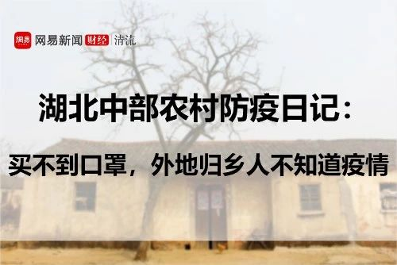
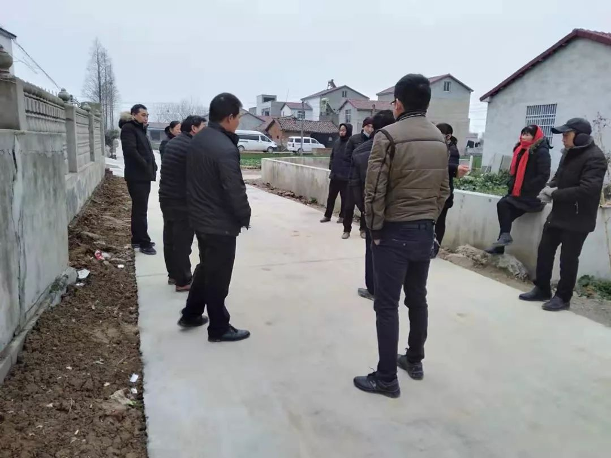
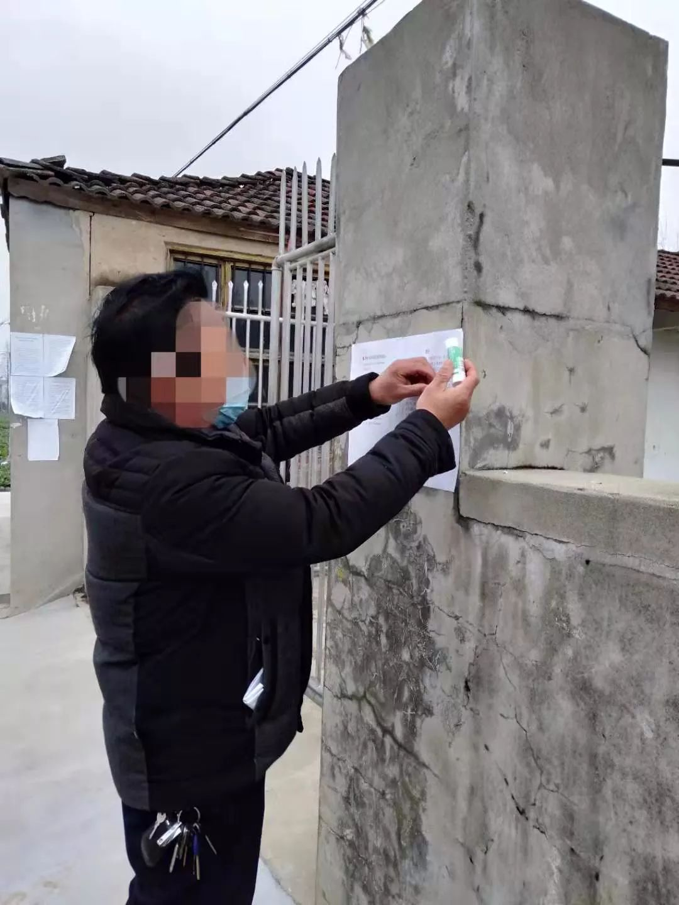

封城之后
原文链接 备份链接 1月23日清早起来时，看到武汉封城的消息。起床后跟正在做饭的母亲说了一声，母亲不是很能理解，也不大关注。这几天一直在她耳边念叨太多疫情的事情，我感觉她都有些消化不过来了。很快黄冈市区也封城了，到了下午我老家武穴也传出了 …


_截止到大年初二（1月26日），村里通往外面的路完全封了，只出不进。村里没有多少口罩，疫情开始严重前，镇上就买不到口罩。直到1月22日，从外地做生意归乡的亲人中，还有人根本不知道这次疫情。_
出品|网易清流工作室
作者|刘亚丹 主编|赵妍
爆料邮箱：
stoolpigeon@service.netease.com
坐标在湖北省中部的一个村庄，属于鄂中荆门市两县交接地带。
2020年1月25日0-24时，荆门市新增新型冠状病毒感染确诊病例17例，共确诊病例38例。据央视新闻报道，截至2020年1月21日24时，我们县（沙洋县）发现新型冠状病毒感染的肺炎疑似病例2例，邻县钟祥1例。
即使身处互联网时代，乡下很多人的信息来源，还是亲友乡邻之间的人际传播。
我姑姑一家1月22日（腊月28日）回家，完全没有听说过疫情，村里也有人是返乡半路才被亲友电话通知消息。我堂哥因为没有疫情认识，开车接了一个从武汉返乡的亲戚，没戴口罩也没做任何防护。1月25日，（正月初一），市里也封城了，我堂哥才意识到严重性，他很慌张，在微信家族群里问我们怎么办。

（大年初二，村里的路已封。图片来自文中疫区村民）

（大年初二，村里停止了一切拜年活动，乡亲们站在路上聊天。戴口罩的依然不多。刘亚丹摄）
最开始引起重视的是我们这些从外地回家的年轻人。开始我们都是劝说家里人要戴口罩，不要出门，在家族群里，我和我姐不断发布最新的消息。1月21日，我早上起床，发现我爸爸没有戴口罩就去集市卖藕，一时非常紧张和生气。那时候网路上传播的也都是“父母一代不戴口罩”的说法。我爸说，他在镇上集市看到，大概只有十分之一的人戴口罩。镇上也买不到医用口罩，我爸爸就买了几个劳保用的口罩回家，分给了我姑姑一个。
1月22日，我们县城沙洋和临县钟祥，都有了疑似的病例。但是村里面极少人戴口罩。尽管我和姐姐在家族群里不停发消息，但还是有表哥们在市区找人开房打麻将。晚上村里的集体散步活动中，我戴着我爸爸买的白色劳保口罩从村头走到村尾好几次，算是自我认为的疫情宣传和普及。这天，我们村的小卖部门口，也贴出了一张疫情介绍告示。

（村里陆续张贴的疫情通知告示。刘亚丹摄）
想到县城、市区比武汉的医疗系统更加薄弱，乡下乡亲们普遍不重视、不防备，我不断告诉我爸妈，不要再接触外人。我姑姑从外地回家之后，我就半开玩笑的表示不愿意和他们接触。一方面，我从武汉回来，还没有过14天的“潜伏期“；另一方面，他们还没有意识到防御措施，随便接触人群。
1月23日，武汉封城。我开始说服我爸，过年不要拜年，也不要让亲友们来家里拜年，成功说服我爸之后，又开始去家族群倡议不要拜年。这天晚上，我们村干部戴着口罩到我们家登记外来人口，这时候算是全村都开始重视了。我对村干部说：“给我们发口罩吧。”村干部说：“我都没有口罩，怎么给你们发。”
1月24日（腊月30日）早晨起来，村干部开着车、架着喇叭在村里面传播疫情消息。我和父母合作，打电话给各方亲友，“今年疫情严重，不拜年了……”。大家都相互理解，村里面过年这几天准备结婚、庆生的喜事基本上也都取消了。
1月25日（正月初一），我们市里已经封城，市里的第一人民医院也发出了医疗物资求助信息，村里的宣传车还是固定早晚宣传。这天下雨，气温也很低，早晨起来，村里没有人出门。
往年初一这天都是村里乡亲们相互拜年，今年这天大家都待在家里，闭门不出。下午两点多，我爸妈看电视看到无聊，捂着被子睡到了下午5点。晚上，我们收到通知，村里面的路就要被封了，只出不进。这时候我妈妈给我小姨舅舅们继续打电话，说明正月初二回外婆家的拜年也都要取消。电话里，我们听到邻镇的小姨们还在走亲戚，聚众打牌。仅仅是隔壁镇，不知道她们什么情况。
1月26日（大年初二），雨停了，村里乡亲们昨天都待在家里无聊，开始二、三聚集在村口聊天。这天村里通往外面的路已经封了，临乡有了疑似得新冠型肺炎的案例。村里面出来聊天的人，也有人戴口罩，大部分也是没有戴。“无聊”成了微信上亲友们最大的情绪，于此同时，我发现家里的水果也要告罄了，地里面的蔬菜倒是够吃。疫情严重前，我们家临时采购了米和煤气。

（村里的村干部在张贴村中封路消息。刘亚丹摄）

（封村告示，只出不进，村里与邻村的交界路段已经封闭。刘亚丹摄）
村中疫情观察时间表：
1月21日，荆门市发现疑似病例。爸爸没有戴口罩就出门去集市卖藕，我很担心。爸爸回来说，镇上戴口罩的不到十分之一，医用口罩和N95口罩都买不到。
1月22日，县里已有疑似病例。姑姑们返乡回家，她们还不知道疫情。这天晚上村里贴出了第一张疫情告示。
1月23日。村干部开始登记村里的外来人口。我对村干部说：“给我们发口罩吧。”村干部说：“我都没有口罩，怎么给你们发。”
1月24日。村里早晚开始有疫情宣传车播放广播。
1月25日。正月初一，村里无人串门拜年，大家都闭门不出。电话得知，临镇的小姨家还在老家聚众打牌。
1月26日。村里封村，通往邻村的路段全部封闭，只出不进。村里面出来聊天的人，也有人戴口罩，大部分也是没有戴。
*刘亚丹是清流工作室高级作者，常驻广州。*
*网易清流工作室（微信号：*wangyiqingliu）出品，未经授权禁止转载。*清流工作室是网易财经旗下原创财经调查团队，更多内容欢迎关注微信公众号。*
往期精彩回顾

原文链接 备份链接 1月23日清早起来时，看到武汉封城的消息。起床后跟正在做饭的母亲说了一声，母亲不是很能理解，也不大关注。这几天一直在她耳边念叨太多疫情的事情，我感觉她都有些消化不过来了。很快黄冈市区也封城了，到了下午我老家武穴也传出了 …
原文链接 备份链接 🎧 点击上方图片，跳转「故事FM」小程序，收听真人讲述。记得添加「我的小程序」，一键收听全部故事哟！ 本来在春节前的最后一期节目里，我预告说 故事FM 会放假一周，节后回来再见。 但是这个春节啊，我们团队都无心过年，大 …
原文链接 备份链接 离开湖北境内的时候，我百感交集。我的父母和亲友还在那里，他们将会面临什么，谁也不知道。 作为一个去过疫区、带着孩子又成功离开的湖北人，我有责任把这几天的历程客观记录下来，希望能够给诸多还在恐慌中的人多少一些参考意义。 …
原文链接 备份链接 这是一个不同寻常的年，心有余悸，跌宕起伏。回武汉这几天的经历，像一部历险记，在我脑海里刻下了深深的烙印。 淡定的武汉 我是1月20号从深圳回老家武汉的。我曾从事过新闻工作，也有不少武汉医疗圈的朋友，因此对武汉肺炎的事一 …
原文链接 备份链接 以下文章来源于地球青年图鉴 ，作者地青 “此刻的中国版图中，武汉好像是一座孤城，但实际上在这座孤城之内还有无数个孤城，有成千上万个原驻家庭把自己锁在家里，他们表面上安静祥和，心头却有一根线紧绷着。”受访者张恒写道。 …